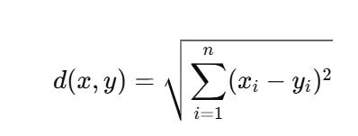

Türchen 21: Clustering
Alloooo, wir gucken uns heute die Distanzmaße an, die beim Clustering für Genexpressionsprofilen benutzt werden, alsooo die Euklidische Distanz, die Manhatten Distanz und die Korrelationsdistanz. Wir starten mal ganz simpel mit der Euklidischen Distanz:
Deine Aufgabe wäre es, ersmal eine Funktion zu schreiben die die Euklidische Distanz für zwei der Vektoren aus den folgenden Profil berechnet:
x1 = c(2, 4, 5, 6)
x2 = c(0.5, 1, 1.25, 1.5)
x3 = c(1.5, 1, 0.75, 0.5)
x4 = c(2.5, 3.5, 4.5, 1)
Clustering - Seite 2
Lösung:
euclidean_distance = function(x, y) {
distance = sqrt(sum((x - y)^2))
return(distance)
}
print(euclidean_distance(x1, x2))
Okey, das war nicht schwer, als nächstes schauen wir uns die Manhatten Distanz an:
Dafür kannst du wieder eine Funktion schreiben, die zwei der vier Vektoren benutzt.
Clustering - Seite 3
Lösung:
manhattan_distance = function(x, y) {
distance = sum(abs(x - y))
return(distance)
}
print(manhattan_distance(x1, x3))
Superr, die nächste ist die Korrelationsdistanz, die ein bisschen aufwendiger wird, mit der Formel:
Unnnnd wir wollen wieder das selbe, wie bei den beiden anderen Distanzen umsetzen.
Clustering - Seite 4
Lösung:
correlation_distance = function(x, y) {
mean_x = mean(x)
mean_y = mean(y)
numerator = sum((x - mean_x) * (y - mean_y))
denominator = sqrt(sum((x - mean_x)^2)) * sqrt(sum((y - mean_y)^2))
correlation = numerator / denominator
distance = 1 - correlation
return(distance)
}
print(correlation_distance(x1, x2))
Okey, jetzt wollen wir aber auch das ganze Profil benutzen und dafür können wir eine Funktion schreiben, die das Profile als matrix bekommt:
profiles = matrix(c(2, 4, 5, 6,
0.5, 1, 1.25, 1.5,
1.5, 1, 0.75, 0.5,
2.5, 3.5, 4.5, 1),
nrow = 4, byrow = TRUE)
Unnnd dann die jeweilige distance_function die man haben möchte:
euclidean_matrix = pairwise_distances(profiles, euclidean_distance)
Und so die pairwise distance matrix für alle Profile in einen berechnet, dafür braucht man zwei for-Schleifen und wir können ausnutzen das die Matrix symmetrisch sein wird
Clustering- Seite 5
Lösung:
pairwise_distances = function(profiles, distance_function) {
n = nrow(profiles)
dist_matrix = matrix(0, n, n)
for (i in 1:n) {
for (j in i:n) {
dist_matrix[i, j] = distance_function(profiles[i, ], profiles[j, ])
dist_matrix[j, i] = dist_matrix[i, j] # Symmetrisch
}
}
return(dist_matrix)
}
# testen
euclidean_matrix = pairwise_distances(profiles, euclidean_distance)
print(euclidean_matrix)
Wir können uns das noch ganz easy visualisieren mit:
heatmap(euclidean_matrix, main = "Euklidische Distanzmatrix", col = heat.colors(10))
dist_obj = as.dist(euclidean_matrix)
hc = hclust(dist_obj)
plot(hc, main = "Dendrogramm für unsere Genexpressionsprofile")
Jooooaaa, das visualisieren ist ein bissl zu spezifisch deswegen einfach direkt der Code. Aber jaaa, das war es wieder. Jetzt kannst du dich maybe besser an die Distanzmaße für das Clustering erinnern und tschauuuuu :]